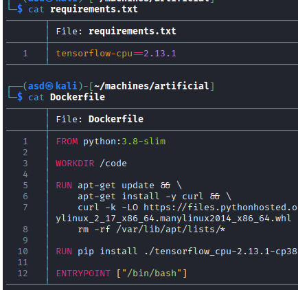

Exploitation Summary
Exploitation process: The target machine was running a web application on port 80 that allowed authenticated users to upload and execute TensorFlow/Keras models. By exploiting a deserialization vulnerability in older versions of Keras, I crafted a malicious .h5 model file containing Python code that executed a reverse shell when the model was loaded, granting initial access as the app user.
After gaining initial access, I discovered a SQLite database containing hashed credentials for multiple users. Using CrackStation, I cracked the hash for user gael and obtained the password mattp005numbertwo, allowing lateral movement via su. As gael, I had read permissions on a compressed backup file containing a Backrest configuration with a bcrypt-hashed password.
Using Hashcat, I cracked the bcrypt hash to obtain the password !@#$%^, which provided access to the Backrest backup service running on port 9898. By creating a backup plan with a malicious pre-backup hook that executed arbitrary commands as root, I triggered a backup manually and obtained a root reverse shell, completing the privilege escalation.
Technologies/Exploits: TensorFlow/Keras model deserialization vulnerability, SQLite credential extraction, bcrypt hash cracking, Backrest backup service command injection via hooks, port forwarding with Chisel.
Initial Reconnaissance
Starting with an nmap scan to identify open ports and services on the target machine:

The scan reveals SSH on port 22 and HTTP on port 80. I add artificial.htb to my /etc/hosts file for easier access.
Web Enumeration
Running gobuster to discover hidden paths, but it doesn't reveal anything beyond what's already visible on the website:

The website is relatively simple, promoting an artificial intelligence product. It includes registration and login functionality, but not much else is immediately visible. After registering an account and logging in, I'm redirected to /dashboard.
Dashboard Analysis - Model Upload Functionality
The dashboard presents an interesting feature - it allows users to upload their own AI models, which are then executed on the server:

This is a significant security concern. Allowing users to upload and execute arbitrary model files on your infrastructure is inherently dangerous. The interface provides sample files to download, which helps understand the expected format.

Understanding the Model Format
Examining the provided example files reveals important information about the expected format:

When attempting to upload a test file, I discover that the application expects files with the .h5 extension. Research indicates that .h5 files are HDF5 format files commonly used to store TensorFlow/Keras machine learning models.
Vulnerability Research - TensorFlow Model Deserialization
Searching for security vulnerabilities related to TensorFlow model files, I find this excellent resource that details how to achieve remote code execution through malicious TensorFlow models.
The vulnerability exploits the deserialization process when Keras loads model files. By crafting a malicious model, arbitrary Python code can be executed when the model is loaded.
Version Considerations
According to this article, Keras v3 has patched this vulnerability. However, the attack still works on older versions. Interestingly, it's possible to force a downgrade of Keras within TensorFlow to make the attack work even on systems that might have newer versions installed.
Initial Access - Malicious Model Upload
After testing various combinations of TensorFlow and Python versions, I successfully reproduce the RCE by creating a malicious .h5 model using this code:

This proof-of-concept demonstrates that I can execute arbitrary Python code on the target system. The model uses Keras Lambda layers with a malicious __reduce__ method to trigger code execution during deserialization.
Obtaining a Shell
I modify the exploit code to execute a reverse shell payload instead of a simple command. After uploading this modified model to the dashboard, I successfully receive a connection as the app user:

Now I have shell access as app, and I can see there's another user on the system named gael.
Internal Service Discovery
Using ss -tuln to examine listening ports, I discover several internal services not exposed externally:

Exploring the filesystem, I find an interesting directory in /opt called backrest containing a shell script. This reveals that a service called Backrest is running on port 9898, which appears to be a backup management solution.
Port Forwarding with Chisel
To access these internal services from my attacking machine, I use Chisel to set up port forwarding. First, I transfer the Chisel binary to the target machine.
On my attacking machine:
./chisel server -p 1234 --reverse
On the victim machine:
./chisel client 10.10.14.91:1234 R:9898:127.0.0.1:9898
Accessing the Backrest service through the forwarded port, I'm prompted for credentials:

I try various common credential combinations like admin/admin, root/root, and usernames app and gael with common passwords, but none work.
I also forward port 5000 and discover it's running the same application exposed on port 80, as registering my test user asd@asd.com reports the user already exists.
Credential Discovery - SQLite Database
Exploring the filesystem further, I find a SQLite database at /app/instance/users.db that stores user information for the web application:
sqlite3 users.db
sqlite> .tables
model user
sqlite> select * from user;
1|gael|gael@artificial.htb|c99175974b6e192936d97224638a34f8
2|mark|mark@artificial.htb|0f3d8c76530022670f1c6029eed09ccb
3|robert|robert@artificial.htb|b606c5f5136170f15444251665638b36
4|royer|royer@artificial.htb|bc25b1f80f544c0ab451c02a3dca9fc6
5|mary|mary@artificial.htb|bf041041e57f1aff3be7ea1abd6129d0
6|admin|admin@artificial.htb|21232f297a57a5a743894a0e4a801fc3
I extract all the password hashes and run them through CrackStation, which successfully cracks several of them. The most useful is gael's password: mattp005numbertwo.
Lateral Movement to User Gael
Using the recovered credentials, I perform lateral movement with su gael and successfully obtain the user flag:

Checking sudo permissions with sudo -l reveals that gael doesn't have any sudo privileges.
I attempt to use SSH port forwarding with gael's credentials to access the Backrest service on port 9898:
ssh gael@10.10.11.74 -L 9898:localhost:9898
However, gael's credentials don't work for the Backrest login.
Group Membership Analysis
Running id reveals that gael belongs to an interesting group and has read permissions on a compressed backup file:

Even though this specific backup file can only be fully extracted by root, having read permissions on the compressed .tar.gz archive allows me to examine its contents without extracting it.
Extracting Configuration from Backup
I can read files within the compressed archive and discover a Backrest configuration file that I couldn't access in the live /opt/backrest directory:

The configuration contains a base64-encoded password. After decoding it with base64 -d, I obtain a bcrypt hash:
$2a$10$cVGIy9VMXQd0gM5ginCmjei2kZR/ACMMkSsspbRutYP58EBZz/0QO
Hash Cracking - Backrest Credentials
Bcrypt hashes are significantly more difficult to crack than simple MD5 hashes. I use Hashcat with mode 3200 (bcrypt) and the rockyou wordlist:
hashcat -m 3200 -a 0 hash.txt /usr/share/wordlists/rockyou.txt
After several minutes, Hashcat successfully cracks the password. I verify the result:
hashcat -m 3200 -a 0 hash.txt /usr/share/wordlists/rockyou.txt --show
$2a$10$cVGIy9VMXQd0gM5ginCmjei2kZR/ACMMkSsspbRutYP58EBZz/0QO:!@#$%^
The password is !@#$%^. While this password doesn't provide direct root access via su, I test it against the Backrest service on port 9898 and successfully authenticate.
Privilege Escalation - Backrest Command Injection
Backrest is a backup management solution that allows creating backup plans and repositories:

The most interesting feature for privilege escalation is that backup plans can execute commands through hooks at various stages of the backup process.
Creating a Malicious Backup Plan
I create a new backup plan with a malicious pre-backup hook that executes arbitrary commands. The hook configuration allows executing shell commands as root since the Backrest service runs with elevated privileges:

With this configuration, every time a backup is executed (which can be triggered manually), I achieve remote code execution as root.
Testing Command Execution
First, I test with a simple command to verify the execution works:

The command executes successfully, confirming I have RCE through the backup hook mechanism.
Obtaining Root Shell
I modify the hook to execute a reverse shell payload instead of a simple command. After setting up a listener on my attacking machine and manually triggering the backup, I receive a connection as root:

I now have full root access to the system and can retrieve the root flag, completing the machine.
Resumen de Explotación
Resumen del proceso: La máquina objetivo ejecutaba una aplicación web en el puerto 80 que permitía a usuarios autenticados subir y ejecutar modelos de TensorFlow/Keras. Explotando una vulnerabilidad de deserialización en versiones antiguas de Keras, creé un archivo de modelo .h5 malicioso conteniendo código Python que ejecutaba una reverse shell cuando el modelo se cargaba, obteniendo acceso inicial como usuario app.
Tras conseguir el acceso inicial, descubrí una base de datos SQLite conteniendo credenciales hasheadas de múltiples usuarios. Usando CrackStation, crackeé el hash del usuario gael y obtuve la contraseña mattp005numbertwo, permitiendo movimiento lateral mediante su. Como gael, tenía permisos de lectura sobre un archivo de backup comprimido conteniendo una configuración de Backrest con una contraseña hasheada en bcrypt.
Usando Hashcat, crackeé el hash bcrypt para obtener la contraseña !@#$%^, que proporcionaba acceso al servicio de backup Backrest corriendo en el puerto 9898. Creando un plan de backup con un hook malicioso de pre-backup que ejecutaba comandos arbitrarios como root, lancé un backup manualmente y obtuve una reverse shell como root, completando la escalada de privilegios.
Tecnologías/Exploits: Vulnerabilidad de deserialización de modelos TensorFlow/Keras, extracción de credenciales de SQLite, crackeo de hash bcrypt, inyección de comandos en el servicio Backrest mediante hooks, port forwarding con Chisel.
Reconocimiento Inicial
Comenzando con un escaneo de nmap para identificar puertos abiertos y servicios en la máquina objetivo:
El escaneo revela SSH en el puerto 22 y HTTP en el puerto 80. Añado artificial.htb a mi archivo /etc/hosts para un acceso más sencillo.
Enumeración Web
Ejecutando gobuster para descubrir rutas ocultas, pero no revela nada más allá de lo que ya es visible en el sitio web:
El sitio web es relativamente simple, promocionando un producto de inteligencia artificial. Incluye funcionalidad de registro y login, pero no mucho más es inmediatamente visible. Tras registrar una cuenta e iniciar sesión, soy redirigido a /dashboard.
Análisis del Dashboard - Funcionalidad de Subida de Modelos
El dashboard presenta una característica interesante: permite a los usuarios subir sus propios modelos de IA, que luego son ejecutados en el servidor:
Esto es una preocupación de seguridad significativa. Permitir a los usuarios subir y ejecutar archivos de modelos arbitrarios en vuestra infraestructura es inherentemente peligroso. La interfaz proporciona archivos de muestra para descargar, lo que ayuda a entender el formato esperado.
Entendiendo el Formato del Modelo
Examinando los archivos de ejemplo proporcionados se revela información importante sobre el formato esperado:
Al intentar subir un archivo de prueba, descubro que la aplicación espera archivos con la extensión .h5. La investigación indica que los archivos .h5 son archivos en formato HDF5 comúnmente usados para almacenar modelos de aprendizaje automático de TensorFlow/Keras.
Investigación de Vulnerabilidades - Deserialización de Modelos TensorFlow
Buscando vulnerabilidades de seguridad relacionadas con archivos de modelo de TensorFlow, encuentro este excelente recurso que detalla cómo conseguir ejecución remota de código mediante modelos maliciosos de TensorFlow.
La vulnerabilidad explota el proceso de deserialización cuando Keras carga archivos de modelo. Creando un modelo malicioso, se puede ejecutar código Python arbitrario cuando el modelo es cargado.
Consideraciones de Versión
Según este artículo, Keras v3 ha parcheado esta vulnerabilidad. Sin embargo, el ataque aún funciona en versiones antiguas. Curiosamente, es posible forzar un downgrade de Keras dentro de TensorFlow para hacer que el ataque funcione incluso en sistemas que podrían tener versiones más nuevas instaladas.
Acceso Inicial - Subida de Modelo Malicioso
Tras probar varias combinaciones de versiones de TensorFlow y Python, consigo reproducir exitosamente el RCE creando un modelo .h5 malicioso usando este código:
Esta prueba de concepto demuestra que puedo ejecutar código Python arbitrario en el sistema objetivo. El modelo usa capas Lambda de Keras con un método __reduce__ malicioso para desencadenar la ejecución de código durante la deserialización.
Obteniendo una Shell
Modifico el código del exploit para ejecutar un payload de reverse shell en lugar de un simple comando. Tras subir este modelo modificado al dashboard, recibo exitosamente una conexión como usuario app:
Ahora tengo acceso shell como app, y puedo ver que hay otro usuario en el sistema llamado gael.
Descubrimiento de Servicios Internos
Usando ss -tuln para examinar puertos en escucha, descubro varios servicios internos no expuestos externamente:
Explorando el sistema de archivos, encuentro un directorio interesante en /opt llamado backrest conteniendo un script shell. Esto revela que un servicio llamado Backrest está corriendo en el puerto 9898, que parece ser una solución de gestión de backups.
Port Forwarding con Chisel
Para acceder a estos servicios internos desde mi máquina atacante, uso Chisel para configurar port forwarding. Primero, transfiero el binario de Chisel a la máquina objetivo.
En mi máquina atacante:
./chisel server -p 1234 --reverse
En la máquina víctima:
./chisel client 10.10.14.91:1234 R:9898:127.0.0.1:9898
Accediendo al servicio Backrest mediante el puerto redirigido, se me solicitan credenciales:
Pruebo varias combinaciones comunes de credenciales como admin/admin, root/root, y los nombres de usuario app y gael con contraseñas comunes, pero ninguna funciona.
También redirijo el puerto 5000 y descubro que está corriendo la misma aplicación expuesta en el puerto 80, ya que al registrar mi usuario de prueba asd@asd.com reporta que el usuario ya existe.
Descubrimiento de Credenciales - Base de Datos SQLite
Explorando más el sistema de archivos, encuentro una base de datos SQLite en /app/instance/users.db que almacena información de usuario para la aplicación web:
sqlite3 users.db
sqlite> .tables
model user
sqlite> select * from user;
1|gael|gael@artificial.htb|c99175974b6e192936d97224638a34f8
2|mark|mark@artificial.htb|0f3d8c76530022670f1c6029eed09ccb
3|robert|robert@artificial.htb|b606c5f5136170f15444251665638b36
4|royer|royer@artificial.htb|bc25b1f80f544c0ab451c02a3dca9fc6
5|mary|mary@artificial.htb|bf041041e57f1aff3be7ea1abd6129d0
6|admin|admin@artificial.htb|21232f297a57a5a743894a0e4a801fc3
Extraigo todos los hashes de contraseñas y los paso por CrackStation, que exitosamente crackea varios de ellos. El más útil es la contraseña de gael: mattp005numbertwo.
Movimiento Lateral al Usuario Gael
Usando las credenciales recuperadas, realizo movimiento lateral con su gael y obtengo exitosamente la flag de usuario:
Comprobando permisos sudo con sudo -l revela que gael no tiene ningún privilegio sudo.
Intento usar SSH port forwarding con las credenciales de gael para acceder al servicio Backrest en el puerto 9898:
ssh gael@10.10.11.74 -L 9898:localhost:9898
Sin embargo, las credenciales de gael no funcionan para el login de Backrest.
Análisis de Membresía de Grupos
Ejecutando id revela que gael pertenece a un grupo interesante y tiene permisos de lectura sobre un archivo de backup comprimido:
Aunque este archivo de backup específico solo puede ser completamente extraído por root, tener permisos de lectura sobre el archivo .tar.gz comprimido me permite examinar sus contenidos sin extraerlo.
Extrayendo Configuración del Backup
Puedo leer archivos dentro del archivo comprimido y descubro un archivo de configuración de Backrest al que no podía acceder en el directorio /opt/backrest en vivo:
La configuración contiene una contraseña codificada en base64. Tras decodificarla con base64 -d, obtengo un hash bcrypt:
$2a$10$cVGIy9VMXQd0gM5ginCmjei2kZR/ACMMkSsspbRutYP58EBZz/0QO
Crackeo de Hash - Credenciales de Backrest
Los hashes bcrypt son significativamente más difíciles de crackear que simples hashes MD5. Uso Hashcat con modo 3200 (bcrypt) y el wordlist rockyou:
hashcat -m 3200 -a 0 hash.txt /usr/share/wordlists/rockyou.txt
Después de varios minutos, Hashcat exitosamente crackea la contraseña. Verifico el resultado:
hashcat -m 3200 -a 0 hash.txt /usr/share/wordlists/rockyou.txt --show
$2a$10$cVGIy9VMXQd0gM5ginCmjei2kZR/ACMMkSsspbRutYP58EBZz/0QO:!@#$%^
La contraseña es !@#$%^. Aunque esta contraseña no proporciona acceso root directo mediante su, la pruebo contra el servicio Backrest en el puerto 9898 y me autentico exitosamente.
Escalada de Privilegios - Inyección de Comandos en Backrest
Backrest es una solución de gestión de backups que permite crear planes de backup y repositorios:
La característica más interesante para la escalada de privilegios es que los planes de backup pueden ejecutar comandos mediante hooks en varias etapas del proceso de backup.
Creando un Plan de Backup Malicioso
Creo un nuevo plan de backup con un hook malicioso de pre-backup que ejecuta comandos arbitrarios. La configuración del hook permite ejecutar comandos shell como root ya que el servicio Backrest corre con privilegios elevados:
Con esta configuración, cada vez que se ejecuta un backup (que puede lanzarse manualmente), consigo ejecución remota de código como root.
Probando la Ejecución de Comandos
Primero, pruebo con un comando simple para verificar que la ejecución funciona:
El comando se ejecuta exitosamente, confirmando que tengo RCE mediante el mecanismo del hook de backup.
Obteniendo Shell como Root
Modifico el hook para ejecutar un payload de reverse shell en lugar de un simple comando. Tras configurar un listener en mi máquina atacante y lanzar manualmente el backup, recibo una conexión como root:
Ahora tengo acceso root completo al sistema y puedo recuperar la flag de root, completando la máquina.